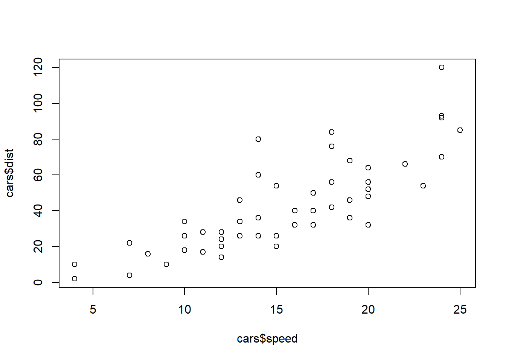
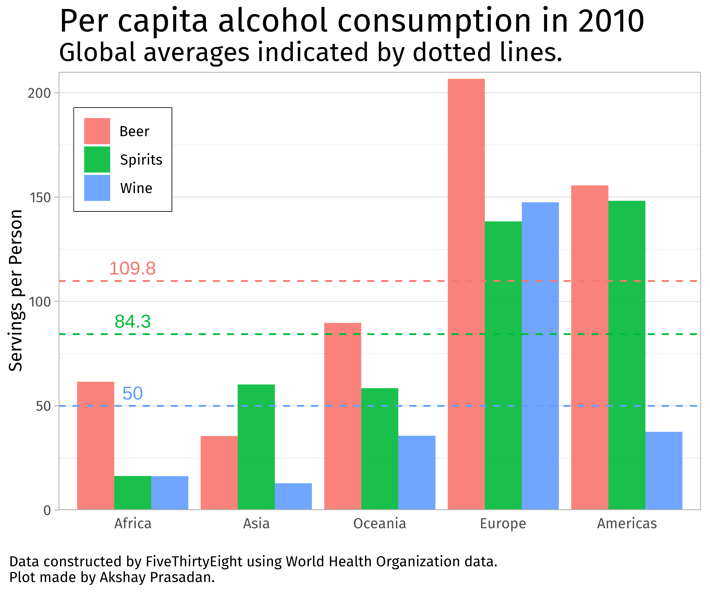
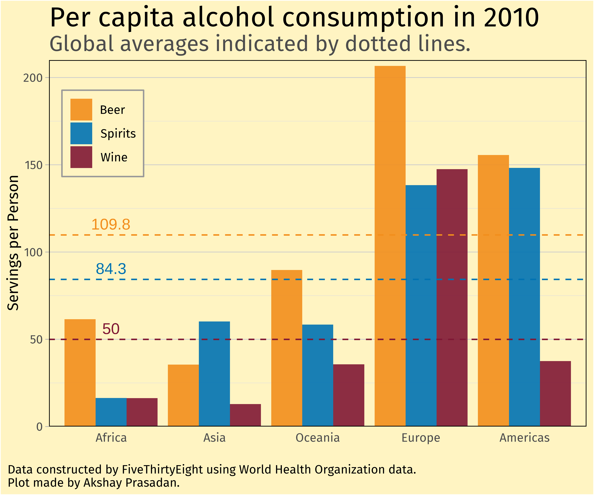

| energy_type | amount | percent |
|---|---|---|
| Coal | 10450 | 0.3520889 |
| Gas | 6680 | 0.2250674 |
| Hydro | 4230 | 0.1425202 |
| Nuclear | 2700 | 0.0909704 |
| Wind | 2310 | 0.0778302 |
| Solar | 1660 | 0.0559299 |
| Oil | 870 | 0.0293127 |
| Bioenergy | 690 | 0.0232480 |
| Other | 90 | 0.0030323 |
Introduction
I was recently watching a talk by David Keyes from the Posit 2024 conference on the design of data science reports. He made a point that increasingly resonates with me: design matters. As data scientists, we don’t produce graphics, tables, papers, or Beamer presentations just for ourselves. We do so to persuade others. As Keyes’ explains, putting effort into design makes people perceive your work as both useful and trustworthy.
It is unfortunate, therefore, when important work in data science is presented with minimal care. Numbers aren’t formatted. Plots barely improve on the defaults. Font sizes are unreadable. Tables look like they were made in Google Docs in 30 seconds. I am definitely guilty of this in my past work. Now I’m trying to persuade fellow academics, journals, private companies, or even the government of the importance of my work. Design matters for this.
Thankfully, modern data science tools make it near effortless to level up the professional appearance of your work. Even the defaults have dramatically improved in appearance—compare the default base R scatterplot (Figure 1) to a typical ggplot. But we can do better.
This post highlights some simple fixes to level up your design while preserving reproducibility. I’m going to focus on topics that arise when dealing with Quarto or RMarkdown documents and presentations, but the concepts should be universal.
Reports
Use Great Tables (gt)
What makes ggplot so useful, in my opinion, is the ease of its grammar. You start with a basic ggplot, add on geometries, give those geometries aesthetics, modify the scales of those aesthetics, and then add on the various bells and whistles.
The gt package brought that grammar for tables instead of plots. Instead of the dull, default tables that R spits out like the following:
we can now create gorgeous tables full of color, logos, Markdown formatting, with an intuitive language. Rather than wrangling with a tibble() until you get the data in the form you want, let gt do that work for you.
| Global Electricity Production by Source | ||||
|---|---|---|---|---|
| Data sourced from Our World in Data | ||||
| Energy Source | TWh (2023) | % of Total | CO₂ Intensity | |
| 🪨 | Coal | 10,450 | 35% | |
| 🧯 | Gas | 6,680 | 23% | |
| 💧 | Hydro | 4,230 | 14% | |
| ☢️ | Nuclear | 2,700 | 9% | |
| 🌬️ | Wind | 2,310 | 8% | |
| ☀️ | Solar | 1,660 | 6% | |
| 🛢️ | Oil | 870 | 3% | |
| 🪵 | Bioenergy | 690 | 2% | |
| 🔶 | Other | 90 | 0% | |
In a nutshell, the syntax is of the following form:
df |>
# optional: group_by before this step
gt() |>
# modify column attributes
cols_*() |>
# format columns
fmt_*() |>
# Labels
tab_*()
# for niche styling
opt_stylize()Check out the various tutorials for the gt package on YouTube or the official documentation. Another useful package is gtsummary if you wish to quickly generate professional looking descriptive tables for scientific journals.
Rounding
Hard-coding numbers is the enemy of reproducibility. If you use code to compute some quantity, say a predicted temperature, you should not include it in your report by literally writing “We predict a temperature of 23.4 degrees Celsius.” What if you find a bug in your code? Then the intended temperature changes but your text does not.
In RMarkdown or Quarto, we can easily embed numbers using inline R (or Python) code. Assume you saved the value as a variable, say temp_pred, we simply write `r temp_pred` in the text portion of the document. Unfortunately, if you do this, the knitted report will display an ugly, unrounded decimal, like 23.420484762. Unless you’re a physicist at CERN, you probably don’t need temperatures this precise. Instead, write `r round(temp_pred, 2)` and show us a level of precision that is reasonable. If you prefer, you can also specify significant digits with signif.
Change up the font
We’re all tired of the default Times New Roman or Computer Modern. There are enormous catalogues out there of different fonts, and you can use them in both PDF or HTML reports. In a PDF document made with Quarto, for example, you can adjust the mainfont argument in your Quarto front matter. You may have to install the fonts though, and this could make your documents harder for others to use.
You can also easily change the fonts of your ggplot plots within your document (see below).
ggplots
Use human language, not computer code in your labels
Leaving in \(y\)-axis labels like “temp,” or even worse, “predicted_temp” or “df$predicted_temp” tells the reader you did the absolute minimum to generate your plot. Anyone who took the time to actually edit the label would have written it nicely, so the fact you did not tells the reader about your indifference.

Don’t overlabel
The reader does not need their intelligence insulted: “2004, 2005, …” on the x-axis does not warrant a “Year” label. In school, students are instructed to label their plots or face point deductions, and I believe this causes an over-reaction where plots are labelled to excess. In a similar vein, avoid redundant information in the title and axes. For example, if your plot title is “Median Energy Consumption by City in the US”, your \(y\)-axis does not need to state “Median Energy Consumption (kWh)” but something more succinct like “Consumption (kWh)” or even just the units (kWh).
Instead take advantage of the opportunity to reduce the amount of text on your plot. Enjoy the minimalism of a blank space instead. Granted, if the application is particularly esoteric, it is better to err on the side of over-labelling.
Remove the default theme
The gray background ggplot uses gets tiring quickly. The first thing I do when creating any plot is to add theme_light() or theme_bw(). This immediately cleans up your plot of distracting elements and lets you customize with your own colors. Even better, design your own personal theme and branding.
Change the colors.
When I first learned about ggplot, I was amazed at how sleek the default plots look. But we can do better and generate our own palettes! There are some great tools out there, such as ColorBrewer 2.0 that can produce color palettes based on the type of data while also accounting for colorblindness or printability.
But don’t just arbitrarily pick some palette and call it a day. Think about the application of your data. Below I used an example of a plot I made for a class on data visualization. The left-side is default colors, and the right was my choice. The colors on the left mean absolutely nothing. Why is beer red and wine blue? Forget aesthetics: readers will struggle to remember what means what as their eyes scan the bars. On the right, the bars evoke a sense that you are really looking at a glass of IPA or red wine. Admittedly, I was unable to think of a compelling color for ‘spirits’, but blue does remind me of the vivid color of Bombay Sapphire.


However, it is important to not go overboard with colors. Stick to a palette throughout a report. Indeed, my ‘good’ example above is rather jarring to look at given this blog’s theme.
Fonts
I highly recommend switching out the fonts in your title, axis labels, legends, and more. This is easy to do with the showtext package. Below I include a code snippet to set the font globally with a font of your choice from Google Fonts. You can also use different font families for different components of your plot, but I wouldn’t recommend it.
library(showtext)
# robo is just a user-defined name you can invoke in your plotting functions
font_add_google("Roboto", "robo")
# To globally use this font
showtext_auto()Use High Resolution Figures
If you’re displaying your ggplot figures in a report or presentation, remember that we are going to zoom in and note every little blemish. You’re creating a professional document, so don’t include images that might as well have been screenshots off your cell-phone.
Save your plots with ggsave to the desired size and increase the dpi argument to 300 or more. You can also save objects as PDFs or SVG files to avoid the blurriness from zooming in (no dpi argument here).
If you changed the fonts with the showtext package, you may have to also specify showtext_opts(dpi = ...) so that your fonts are also of high resolution.
Presentations
Most of the suggestions I have above also apply to reports, but I’ll add some unique to presentations.
Make your Fonts Comically Large
Comically. It should make you cringe to look at on your computer. A large chunk of talks I’ve attended over the years use miniscule font sizes on plot labels, math equations, figure captions, etc. A presentation is not the same thing as a report. The audience can’t just zoom in like a PDF or web page. What looks fine on the computer is probably too small on the projector.
I was a teaching assistant one year for a summer program on undergraduate research. Nearly every student made this same font mistake. So prior to their final presentations, I would often walk the students with me to the back of the class and asked them to read their own slides. That got the point across.
So go overboard, I say. Make the text on everything large enough that it makes you cringe. You will likely pre-empt some questions from people who missed critical points hidden in ant-sized text but were too polite to interrupt. Unless your goal is to hide that content from the audience, in which case, why even include it?
Similarly, resist the temptation to reduce font sizes just for the purpose of adding more content. Beamer does a decent job of using default sizes appropriate for presentations, but I prefer larger.
Make page sizes large
Audience members like to refer back to page numbers with questions, so help them out by enlarging their size. Make sure the page numbers are the actual ‘frames’, i.e., the set of slides with the same content (hidden until the transition). Otherwise if you add bullet by bullet points, your slide numbers will be unnecessarily large.
Transitions should still give audience members time to read
Often times a speaker will include transitions for every bullet point. This is fine, I think, except when the speaker shows the last few points and immediately proceeds to the next slide without giving the audience the time to even read it. It is better to reveal points in batches or at least pause for a moment.
Conclusion
My broader point is that design is important, and tools like Quarto, ggplot, gt, Beamer, and others make it very easy to level up your design skills with minimal work. Yes, there is a bit more boilerplate typing in your code, but that’s where defining your own custom themes, templates, or just plainly using copy and paste come in handy. If you are asked to produce a plot, the hard part isn’t adding labels, changing up the palette, or rounding numbers: it’s probably acquiring and cleaning the data. If you are putting in that work, you might as well add a sprinkling of professionalism with a few lines of code.
Citation
For attribution, please cite this work as:
Prasadan, Akshay. 2025. “First Impressions in Data Science
Matter.” May 25, 2025. https://akprasadan.github.io/posts/2025-05-24-data-viz-pet-peeves/.